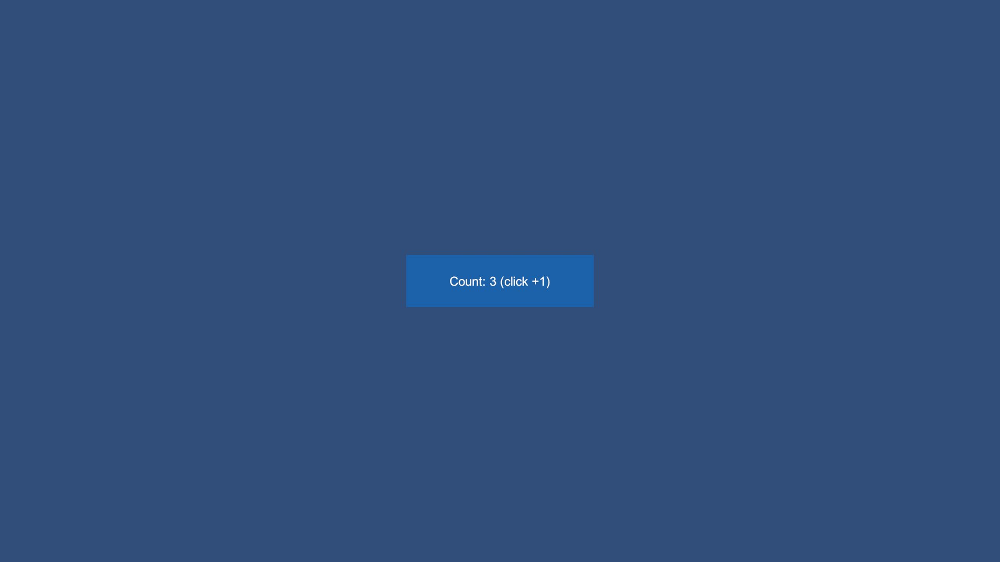

目录
更新：2026-10-29
1. 最终结果
| 验证 | 结果 | 覆盖 |
|---|---|---|
| Python RevMCP 回归 | 22/22 通过 | 真实 stdio、外部 Python、中文参数、取消、并发日志、脱敏、intent 和计划断言 |
| Python RevCLI 回归 | 25/25 通过 | 参数、计划引用/断言/清理、报告命名与写入 |
| Unity EditMode | 44/44 通过，0失败/跳过 | JSON/资产/Prefab、AB依赖、新增日志8项与输出路径8项 |
| 实际 MCP → HTTP → Unity Play | 通过 | 真实 UI +1、GM +2、计数3、PNG、ErrorCount=0、finally复位0 |
| 实际 MCP → Editor 文件桥 → Unity Play | 通过 | 真实 GM +3、计数3、PNG、ErrorCount=0、finally复位0 |
| 活动日志六项断言 | 全部通过 | Agent intent、Editor GM、HTTP GM、计划步骤、finally、中文标题 |
| RevResPath 实际生成迁移 | 六项全部通过 | 自定义文件存在、GUID保留、移回默认、内容一致、默认GUID、配置恢复 |
EditMode 测试执行记录：Library/RevMCPActivityVerification/EditMode-release.json，实际44个用例全部通过。新增路径测试使用隔离资产；实际生成验证移动的是工程原生成文件，结束移回默认且恢复原配置字节。临时输出目录已清理。生成文件、音效文件和项目配置没有作为本次变更提交。
2. 实际调用与日志证据
真实 stdio 握手后发现144个工具、4条实际注册 GM。HTTP计划含 UI点击与GM；Editor计划检查GM/状态/截图。每项业务断言、ErrorCount=0和finally复位都按真实响应判断，不凭窗口显示绿色宣称通过。

截图来自真实 PNG，仅转JPEG压缩，不拼接/美化。它们验证游戏画面，不是新版编辑器日志窗口截图。窗口的中文标题、用途与intent来自实际日志读取和确定的接口说明测试；最终编辑器窗口的完整桌面截图未取得，窄窗口交互视觉未全面验收。报告不把这部分说成通过，也不制作虚假的窗口效果图。
原始计划、活动JSON和工单保留在忽略目录 Library/RevMCPActivityVerification / Library/RevolutionAutomation，不提交凭据或原始日志。可读教程在 活动日志与生成路径使用说明。
3. 本次发现的问题与修正
首次进入Play等待超时，但查询确认游戏已实际启动；未重复启动变更，保留Timeout工单后继续后续验证。外部Python在Windows重定向输入时出现中文代码页错误，统一PYTHONUTF8/PYTHONIOENCODING后回归通过。Editor不能访问Runtime内部RevGMParser，复用原Editor命令名扫描后编译通过，不公开运行时内部类。
早期Editor完整UI计划遇到目标不可Raycast的拒绝，清理仍成功；没有去掉UI遮挡校验。HTTP完整UI计划通过；最终Editor计划独立验证GM/状态/截图链路，不以它代替Editor UI点击验收。两条计划实际覆盖分别列在结果表中。
4. 已验证边界与收尾
活动账本可观察MCP调用、Unity执行、外部CLI和计划步骤；它看不到Agent其它工具的操作和内部思考。intent仅记录Agent明确给出的目的，不代表业务成功或授权。未提供目的时由接口说明解释用途，不虚构意图。
本次使用图形Play的HTTP服务，没有重新构建独立Player或测试Android/WebGL/手机。Windows开发版Player继承同一运行时日志实现，但本次不据此宣称设备验收。未声称每个Editor动作或所有第三方插件已逐项测试。
测试启动的HTTP与Play已停止；用户原本的RevGame与另一个Unity工程保留。框架工程原本未打开，本次隔离验证不写入用户已有未提交项目设置。代码最终推送原作者Yokino337088/Revolution的main，远端哈希以实际推送后核验为准。
实际计数3画面
